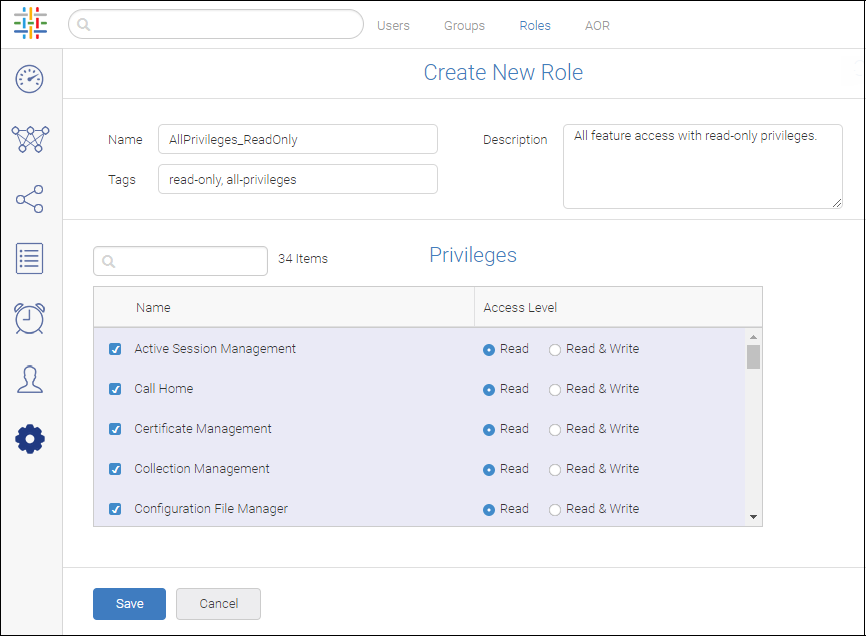
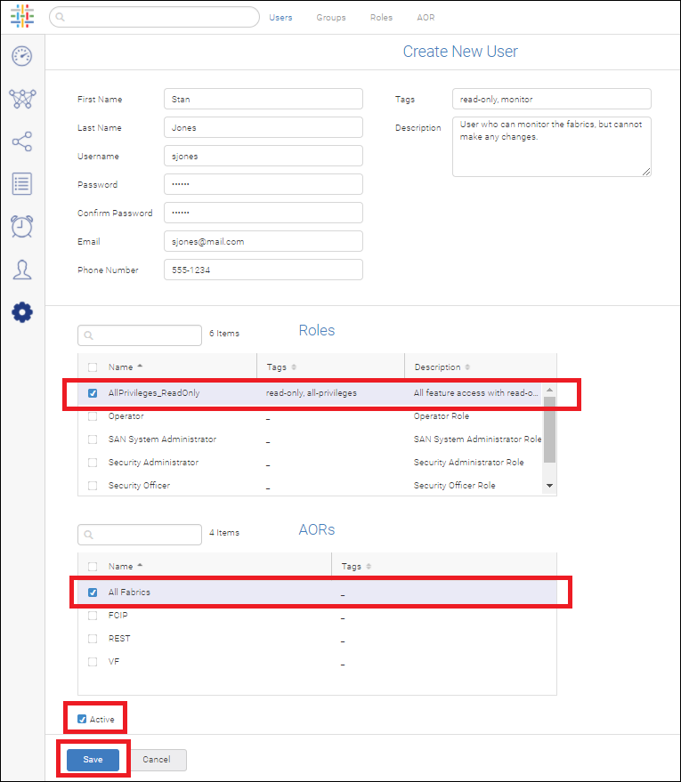

Create a Read-Only User¶
This example shows how to create a Spectre user with read-only access privilege. First you create the role, and then you add the user.
Click the Settings icon ( ), and then select General Settings > User and User Group Management.
Create a read-only role.
Select the Roles tab, and click the Add Role button ( ) in the top right corner of the page.
Give the role a name.
(Optional) Add a description and one or more tags.
Select what privileges you want the user to have.
By default, the Read access level is selected for all privileges.
Scroll down to see additional privileges. In this example, all privileges are selected.
Click Save.
Add the user and assign the read-only role.
Select the Users tab, and then click the Add User button ( ) in the top right corner of the page.
Fill out the standard user form.
In the Roles section, select the read-only role you created.
In the AOR section, select the hosts and fabrics you want the user to see.
In this example, All Fabrics is selected. Note that by default, the user account is activated.
Click Save.